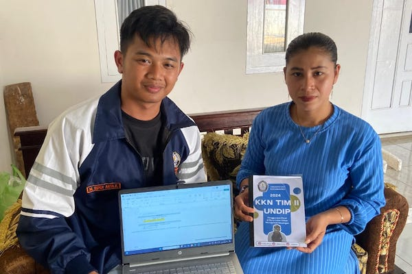

Durenombo, 10 Agustus 2024 – Mahasiswa Kuliah Kerja Nyata (KKN) TIM II dari Universitas Diponegoro (Undip) Jurusan Akuntansi Perpajakan telah sukses mengadakan edukasi dan pelatihan penggunaan software akuntansi bagi pelaku Usaha Mikro, Kecil, dan Menengah (UMKM) di Desa Durenombo khusunya UMKM pengusaha tempe dan pengusaha kripik pisang sarang tawon. Kegiatan yang berlangsung selama dua hari ini bertujuan untuk meningkatkan literasi digital dalam manajemen keuangan, khususnya menggunakan aplikasi Money Lover dan Microsoft Excel.
Pelatihan ini di laksanakan secara langsung di Desa Durenombo yaitu di rumah pengusaha tempe dan pengusaha kripik pisang sarang tawon. Mereka antusias mengikuti setiap sesi pelatihan yang dirancang secara interaktif dan aplikatif. Dalam pelatihan ini, para peserta diajarkan bagaimana cara mencatat pemasukan dan pengeluaran secara efektif menggunakan aplikasi Money Lover. Selain itu, mereka juga diberikan panduan untuk membuat laporan keuangan sederhana menggunakan Microsoft Excel, yang dapat membantu mereka dalam mengelola arus kas dan mengoptimalkan keuntungan usaha.
KKN TIM II Undip, Muhammad Rizqy Arta Kurniawan, menjelaskan bahwa tujuan dari pelatihan ini adalah untuk menyampaikan program kegiatan keilmuan dan memberikan solusi praktis kepada UMKM dalam mengelola keuangan mereka. "Dengan penggunaan aplikasi yang mudah dipahami seperti Money Lover dan Excel, kami berharap para pelaku UMKM dapat lebih mandiri dalam mencatat dan menganalisis keuangan mereka. Ini penting agar mereka dapat mengambil keputusan bisnis yang lebih baik dan lebih cepat," ujar Arta.
Pemilik usaha tempe dan pengusaha kripik pisang sarang tawon mengungkapkan rasa terima kasihnya atas ilmu yang telah diberikan. "Sebelumnya, saya masih mencatat pemasukan dan pengeluaran secara manual, sering kali bingung ketika menghitung keuntungan. Dengan pelatihan ini, saya jadi lebih paham dan merasa lebih percaya diri dalam mengelola keuangan usaha saya," kata Ibu pengusaha kripik sarang tawon dan pengushaa tempe.
Pelatihan ini juga didukung penuh oleh pemerintah desa setempat, yang berharap kegiatan serupa dapat terus dilakukan untuk mendukung pengembangan UMKM di Durenombo. Kepala Desa Durenombo, Bapak Sireng, menyatakan bahwa kolaborasi dengan perguruan tinggi seperti Undip sangat bermanfaat bagi masyarakat desa. "Kami sangat mengapresiasi upaya mahasiswa KKN dalam memberikan edukasi yang bermanfaat bagi UMKM. Semoga kerja sama ini bisa terus berjalan di masa depan," tuturnya.
Dengan adanya pelatihan ini, diharapkan UMKM di Desa Durenombo dapat lebih maju dan berdaya saing dalam menghadapi tantangan ekonomi, terutama dalam era digital yang terus berkembang. Arta dari KKN TIM II Undip pun merasa bangga dapat memberikan kontribusi nyata bagi pemberdayaan ekonomi masyarakat desa.
Saya, Risky, Seorang Mahasiswa Universitas Diponegoro yang saat ini sedang menjalani KKN di Desa Durenombo. Melalui kegiatan ini, saya berupaya untuk mengaplikasikan ilmu yang telah diperoleh serta memberikan kontribusi positif bagi masyarakat.
Dukuh Durenombo, Desa Durenombo, Kec. Subah, Kabupaten Batang, Jawa Tengah 51262
+62 856-9328-46730
baldesdurenombo@gmail.com
© Desa Durenombo. All Rights Reserved. Created by KKN Tim II Universitas Diponegoro 2024